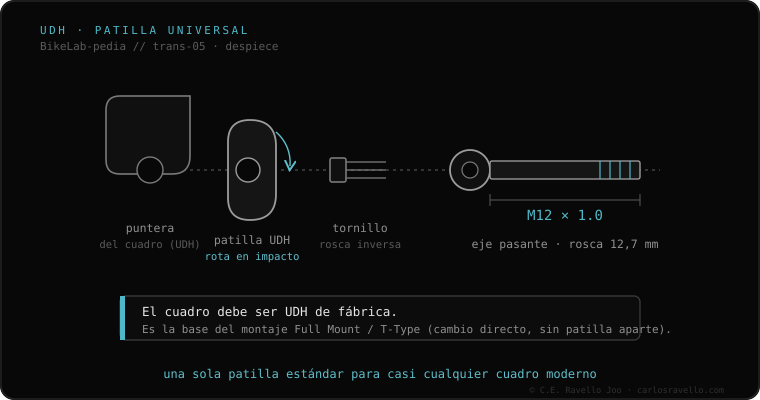

UDH (Universal Derailleur Hanger) é o gancho de câmbio padronizado da SRAM. O gancho é a peça «fusível» entre o quadro e o câmbio traseiro: ele se quebra para salvar o quadro numa queda. Antes havia centenas de ganchos diferentes; UDH unifica essa interface em uma só, montada de forma concêntrica ao eixo passante (rosca M12×1.0). Além disso, um quadro UDH é o requisito para instalar os câmbios SRAM Transmission (T-Type) de montagem direta, sem gancho. Atenção: o quadro deve ser projetado de fábrica para UDH; não é um adaptador universal.
É a peça que acabou com o pesadelo de «qual gancho meu quadro usa?». E, de quebra, abriu a porta para a transmissão mais moderna da SRAM.
O gancho tradicional muda em cada quadro, um pesadelo de peças. UDH define uma geometria única que qualquer marca pode adotar. Monta-se ao redor do eixo passante e foi projetado para girar para trás diante de um impacto, dissipando energia. Sua grande vantagem extra: os quadros UDH podem receber o câmbio T-Type da SRAM, que se fixa direto ao quadro (Full Mount) substituindo o gancho.

Quadro projetado para UDH + eixo passante M12×1.0. Num gancho UDH você pode montar qualquer câmbio tradicional (Shimano, SRAM, Campagnolo) com sua rosca padrão. Para montar um câmbio SRAM T-Type/Transmission, o quadro deve ser UDH (o câmbio substitui o gancho). Não serve para quadros de blocagem rápida nem ganchos específicos antigos.
Se você está em dúvida sobre qual cassete, núcleo ou corrente encaixa na sua bike, mande o caso. Diagnóstico real, sem te vender nada. Fale conosco no WhatsApp
Não. O quadro deve ser fabricado especificamente para UDH. Se o seu quadro não é UDH, não dá para convertê-lo.
Sim. O UDH tem a rosca padrão de câmbio, então aceita Shimano, SRAM ou Campagnolo tradicionais.
Sim, obrigatoriamente. O câmbio T-Type é Full Mount: fixa-se ao quadro substituindo o gancho UDH. Sem quadro UDH não dá.
© 2026 BikeLab Studio. Conteúdo sob CC BY 4.0: você pode copiar, traduzir e publicar, inclusive com fins comerciais. A citação é obrigatória. Sem atribuição, a licença é revogada automaticamente (CC BY 4.0, §6.a) e o uso passa a ser violação de direitos autorais: solicitamos a retirada do conteúdo e sua desindexação. · Design e propriedade: Carlos Ravello Joo